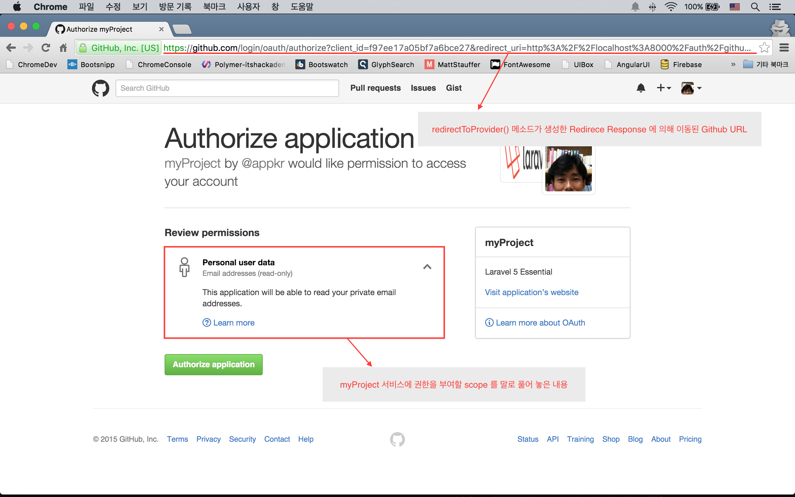
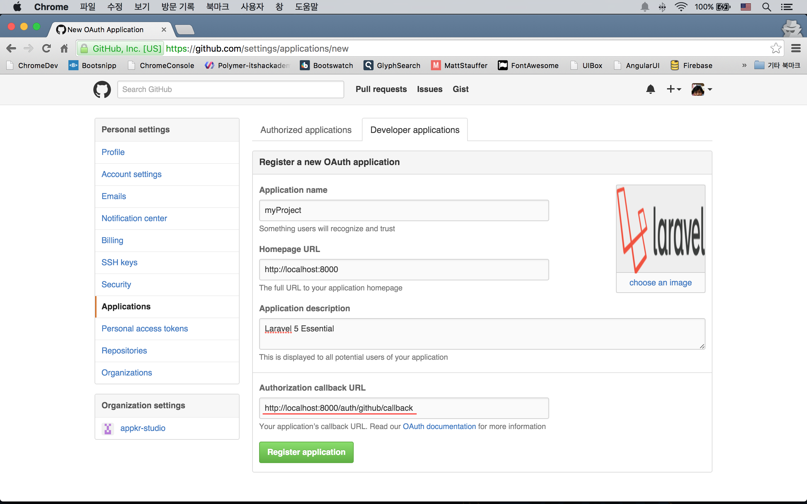
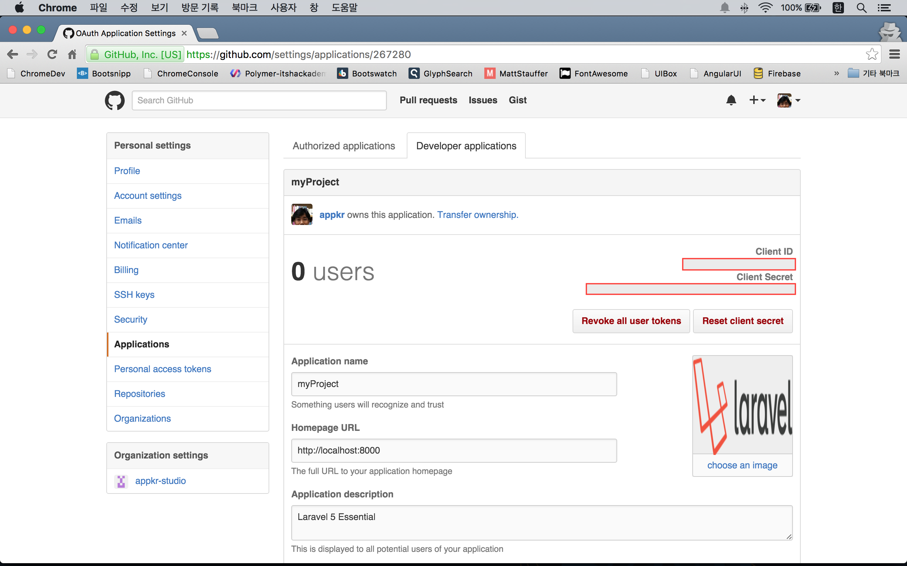
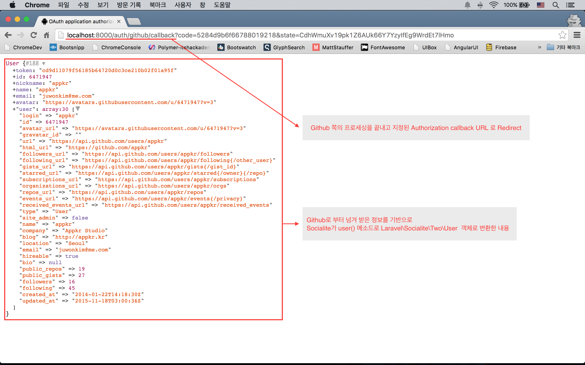
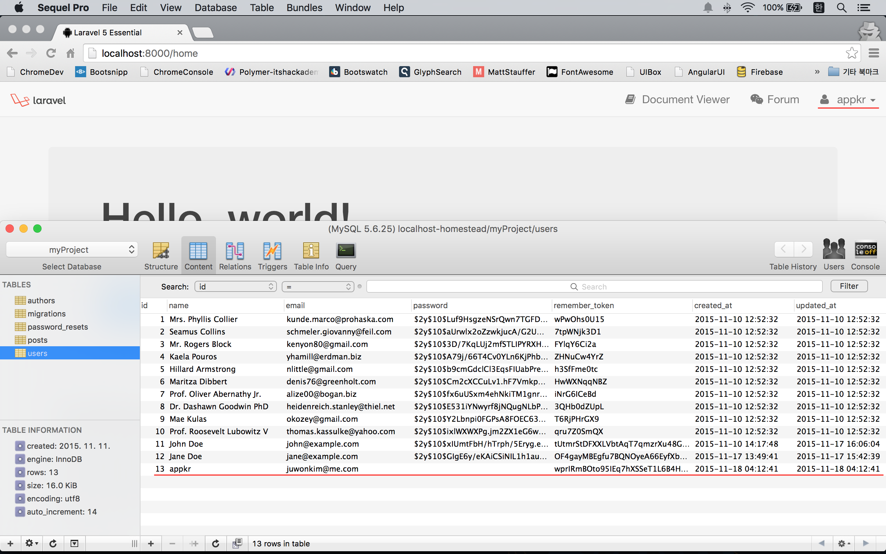
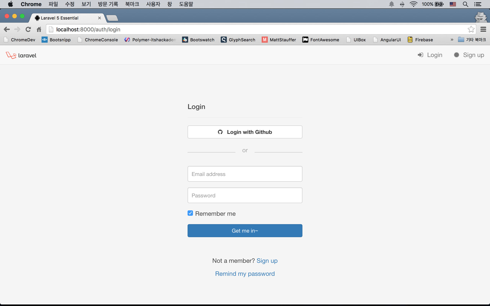

실전 프로젝트 2 - Forum
33강 - 소셜 로그인
소셜 로그인을 지원하지 않는 서비스는 구닥다리로 느껴진다. 소셜 로그인은 내 서비스에 들어 온 사용자의 신분확인을 제 3자에게 위탁(아웃소싱)하는 행위라 보면 되며, 기술적인 백그라운드는 Oauth 이다 (동작 시퀀스가 궁금하다면 조대협님의 블로그를 참조하자).
간단히만 설명하자면... 내 서비스에서 사용자가 소셜로그인 버튼을 누르면, 우리 서비스('myProject'라 하자.)에 대한 여러가지 정보를 쿼리스트링으로 담고 소셜로그인 서비스 제공자의 페이지로 이동하게 된다. 표시된 UI 에서 사용자가 승인을 누르게 되는데, 이는 "내가 myProject 서비스에 이 소셜서비스의 권한을 위임해 줄게. 다는 안되고 UI 아래에 표시된 scope로 지정된 만큼만..." 의 의미이다. 즉 myProject는 소셜로그인 서비스를 통해 사용자의 신원을 확인하게 되는 과정인 것이다.

이 코스에서는 github의 소셜로그인을 이용해 본다.
Socialite 확장 기능
소셜로그인을 위한 구현체는 라라벨 기본 패키지에 포함되어 있지 않고 별도로 설치해야 한다.
$ composer require "laravel/socialite:2.0.*"// config/app.php
'providers' => [
// Other service providers...
Laravel\Socialite\SocialiteServiceProvider::class,
],
'aliases' => [
// Other aliases...
'Socialite' => Laravel\Socialite\Facades\Socialite::class,
]Oauth Credential 설정
Github Developer Applications Console 을 방문하여 'Register new application' 버튼을 눌러 아래 그림과 같이 정보를 입력하자. Authorization callback URL 은 'http://localhost:8000/auth/github/callback'으로 하자.


Application 등록이 완료되어 위 그림과 같은 등록정보 페이지를 확인할 수 있는데, 여기서 'Client ID'와 'Client Secret'를 복사하여, config/services.php 에 github 소셜로그인 정보를 셋팅한다. 물론 .env 파일에 넣고, env() Helper 로 읽어 오는 것이 정석이다.
// config/services.php
return [
// Other services setting
'github' => [
'client_id' => '복사한 Client ID',
'client_secret' => '복사한 Client Secret',
'redirect' => route('session.github.callback'),
],
];Route 정의
공식문서대로 구현하자. 대신 Route 이름을 주자.
Route::group(['prefix' => 'auth', 'as' => 'session.'], function () {
// Other route definitions...
/* Social Login */
Route::get('github', [
'as' => 'github.login',
'uses' => 'Auth\AuthController@redirectToProvider'
]);
Route::get('github/callback', [
'as' => 'github.callback',
'uses' => 'Auth\AuthController@handleProviderCallback'
]);
});컨트롤러 메소드 정의
app/Http/Controllers/Auth/AuthController.php 에 아래 메소드를 추가한다.
class AuthController extends Controller
{
...
public function redirectToProvider()
{
return \Socialite::driver('github')->redirect();
}
public function handleProviderCallback()
{
$user = \Socialite::driver('github')->user();
dd($user);
}
}redirectToProvider() 메소드는 사용자가 소셜로그인 버튼을 눌렀을 때, Github 승인 페이지로 이동시켜주는 Redirect 응답을 만들어 준다. Github 쪽에서 모든 작업이 완료되면, 앞 절에서 우리가 설정한 Authorization callback URL로 Redirect 시키면서 Payload로 여러가지 정보들을 넘겨준다. 요청을 받은 handleProviderCallbck() 메소드는 Github 로 부터 넘겨 받은 Payload를 기반으로 Laravel\Socialite\Two\User 인스턴스를 만든다.
'http://localhost:8000/auth/github' 주소를 직접 쳐서 여기까지 테스트를 해 보자.

소셜 사용자 등록 및 로그인 처리
Github를 이용해서 로그인한 사용자를 우리 서비스의 사용자로도 등록시키자. 또, 세션을 만들어야 하므로, 로그인 처리도 하기 위해 handleProviderCallback() 메소드를 업데이트하자. 엘로퀀드 모델에서 firstOrCreate() 메소드는 인자로 주어진 정보와 일치하는 레코드가 있으면 반환하고, 없으면 새로 생성하는 역할을 한다.
class AuthController extends Controller
{
...
public function handleProviderCallback()
{
$user = \Socialite::driver('github')->user();
$user = User::firstOrCreate([
'name' => $user->getName(),
'email' => $user->getEmail(),
]);
auth()->login($user, true);
return redirect(route('home'));
}'http://localhost:8000/auth/github' 주소를 직접 쳐서 여기까지 테스트를 해 보자.

참고 Github 사용자의 경우, 현재는 비밀번호가 없기 때문에 네이티브 로그인 기능으로 로그인할 수 없다. users 테이블에 소셜로그인으로 생성된 사용자에 대한 유효성을 표시하는 플래그를 만들고, 로그인 이메일은 맞는데 비밀번호가 없고 소셜 로그인 유효성 플래그가 있는 경우, 비밀번호를 추가로 받아 네이티브로도 로그인할 수 있게 하는 등의 기능 확장은 /각/자/ 해 보자. 또, Github 뿐만 아니라, 여러 소셜 로그인 공급자를 등록할 수 있도록 Social 모델을 만들어서 User 모델과 연결시키는 수준의 기능확장도 /각/자/ 도전해 보자.
소셜 로그인 버튼 추가
사용자가 Github 를 이용해 우리 서비스에 로그인할 수 있도록 로그인 페이지에 버튼을 달아 주자.
@section('style')
<style>
/* 딱 이 페이지에서만 필요한 스타일링이 있어 여기에 정의했다. */
/* 뭘 했는지는 코드를 살펴보자. */
</style>
@stop
@section('content')
<form action="{{ route('session.store') }}" method="POST" role="form" class="form-auth">
{!! csrf_field() !!}
<div class="page-header">
<h4>Login</h4>
</div>
<div class="form-group">
<a class="btn btn-default btn-block" href="{{ route('session.github.login') }}">
<strong><i class="fa fa-github icon"></i> Login with Github</strong>
</a>
</div>
...
@stop